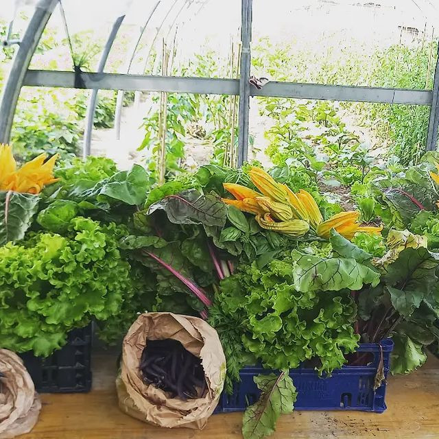

L’organizzazione di volontariato Dikuntu ODV nasce il 17 Marzo 2021.
Gli obiettivi e le iniziative sono molte, tutte rivolte alla realizzazione di buone pratiche per sostenere e rispettare la terra:
- Armonia ed equità
- Accoglienza e dedizione
- Potenziale prima della forma
Questi ed altri aspetti trovano espressione nei termini cinesi che ne formano il nome e che, sebbene con accezioni diverse, significano terra:
DI - KU - NTU
Chi siamo e come puoi sostenerci
Soci Sostenitori.
Si impegnano a sostenere i costi della preparazione del terreno, dello stipendio di un dipendente e degli oneri amministrativi.
Contributo per l’anno in corso 700 Euro.
Soci ordinari:
Partecipano alle attività dell’odv condividendo gli scopi dell’associazione.
Contributo per l’anno in corso 20 Euro.
Soci minorenni:
Riconosciamo l’importanza di un ambiente in cui anche i più giovani possano esprimersi e sperimentare l’importanza di un rapporto più vicino alla natura.
Contributo per l’anno in corso 2 Euro.
Donatori:
Tutti coloro che ci sostengono, anche se non appartengono formalmente all’odv, con beni utili all’orto o donazioni di carattere economico.

Vuoi saperne di più? Contattaci per maggiori dettagli.